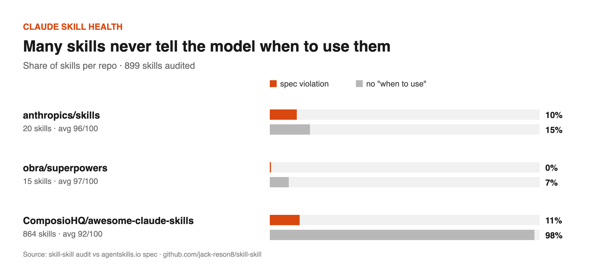

skill-skill: write Claude skills that actually get used
A skill only helps if Claude loads it, and Claude decides from one field, the description. skill-skill turns your workflow into a skill that changes the output, then lints it against the Agent Skills spec with a 0–100 health score.
Check a skill in your browser →
Install
/plugin marketplace add jack-reson8/skill-skill /plugin install skill-skill@skill-skill
Audit your installed skills: python3 scripts/skill_audit.py --all --badge. Audit any public repo into a report and chart: python3 scripts/skill_report.py owner/repo.
What we found in 899 public skills

Some descriptions never say when to use the skill: 3 of 20 official skills, 1 of 15 in obra/superpowers, and 846 of 864 in a large community collection. 93 skill names break the spec, and the official claude-api description is 1,068 characters, over the 1,024 limit. Fixes were sent upstream: anthropics/skills#2050 and ComposioHQ/awesome-claude-skills#2312. Full report · 中文
What the linter checks
It checks that the name is lowercase-hyphen and matches the folder, the description length (at most 1024) and whether it has a "when to use" clause, and name collisions. It finds reference files nothing points to (they're never read) and paths pointing to missing files. It also flags an oversized SKILL.md, steps that produce nothing, and ALL-CAPS overuse. Each ✗ costs 15 points and each warning 5.
FAQ
- Why doesn't Claude use my skill?
- Claude picks skills from the description alone. Say what it does and when to use it, with the phrases your users actually type, and stay under 1,024 characters.
- What are the SKILL.md name rules?
- 1–64 lowercase letters, numbers and single hyphens, matching the parent folder.
Zoho Desk Automationorlemon_squeezyare invalid. - How is this different from skill-creator?
- Anthropic's skill-creator runs full evals and description optimisation. skill-skill is the fast path: it distils real work into forcing functions (required artifacts, gates, scripts) and gives a static lint in seconds. They work well together.
MIT · GitHub · by jack-reson8